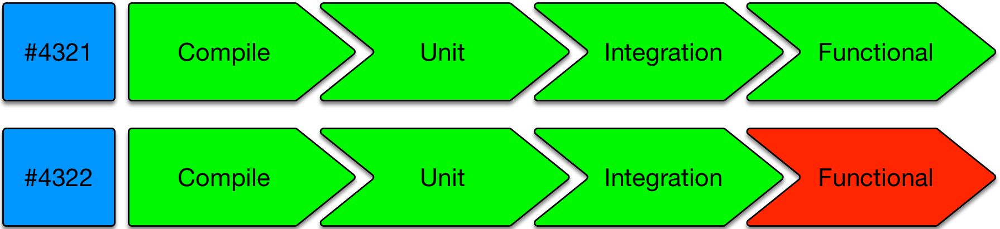
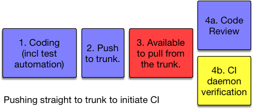
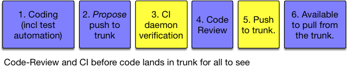

Continuous Integration (CI)
individuals practice Trunk-Based Development, and teams practice CI
— Agile Steve SmithContinuous Integration - as defined
For many years CI has been accepted by a portion of software development community to mean a daemon process that is watching the source-control repository for changes and verifying that they are correct, regardless of branching model.
However, the original intention was to focus on the verification single integration point for the developer team. And do it daily if not more. The idea was for developers themselves to develop habits to ensure everything going to that shared place many times a day was of high enough quality, and for the CI server to merely verify that quality, nightly.
CI as we know it today was championed by Kent Beck, as one of the practices he included in
“Extreme Programming" in the mid-nineties. Certainly in 1996, on the famous ‘Chrysler Comprehensive Compensation System’ (C3)
project that Kent had all
developers experiencing and enjoying the methodology - including the continuous integration aspect. The language for
that project was Smalltalk and the single integration point was a Smalltalk image
(a technology more advanced than a “mere” source-control systems that rule today).
in the mid-nineties. Certainly in 1996, on the famous ‘Chrysler Comprehensive Compensation System’ (C3)
project that Kent had all
developers experiencing and enjoying the methodology - including the continuous integration aspect. The language for
that project was Smalltalk and the single integration point was a Smalltalk image
(a technology more advanced than a “mere” source-control systems that rule today).
Thus, the intention of CI, as defined, was pretty much exactly the same as Trunk-Based Development, that emerged elsewhere. Trunk-Based Development did not say anything about Continuous Integration daemons directly or indirectly, but there is an overlap today - the safety net around a mere branching model (and a bunch of techniques) is greatly valued.
Martin Fowler (with Matt Foemmel) called out Continuous Integration in an article in
2000,
(rewritten in 2006), and
ThoughtWorks colleagues went on to build the then-dominant “Cruise Control"
in early 2001. Cruise Control co-located the CI configuration on the branch being built next to the build script, as it
should be.
Integration: Human actions
It is important to note that the build script which developers run prior to checking in, is the same one which is followed by the CI service (see below). The build is broken into gated steps due to a need for succinct communication to you the developer as well as teammates. The classic steps would be: compile, test-compile, unit test invocation, service test invocation, functional test invocation. Those last two are part of the integration tests class.
If the build passed on the developer’s workstation, and the code is up to date with HEAD of what the team sees for trunk, then the developer checks in the work (commit and push for Git). Where that goes to depends on which way of working the team is following. Some smaller teams will push straight to trunk, and may do so multiple times a day (see Committing straight to the trunk). Larger teams may push to a patch-review system, or use short-lived feature branches, even though this can be an impediment to throughput.
CI services: Bots verifying human actions
Every development team bigger than three people needs a CI daemon to guard the codebase against bad commits and timing mistakes. Teams have engineered build scripts which execute quickly. This should apply from compilation through functional testing (perhaps leveraging mocking at several levels) and packaging. However, there is no guarantee that a developer would run the build script before committing. The CI daemon fulfils that role by verifying commits to be good once they land in the trunk. Enterprises have either built a larger scaled capability around their CI technology, so that it can keep up with the commits/pushes of the whole team or they use batching of commits which takes up less computing power to track and verify work.
Radiators
A popular radiator-style visual indication of progress would be those shown as a left-to-right series of Green (passing) or Red (failing) icons/buttons with a suitably short legend:

This should go up on TVs if developers are co-located. It should also be a click through from notification emails.
Quick build news
The elapsed time between the commit and the “this commit broke the build” notification, is key. That is because the cost to repair things in the case of a build breakage goes up when additional commits have been pushed to the branch. One of the facets of the ‘distance’ that we want to reduce (refer five-minute overview) is the distance to break.
Pipelines - further reading
Note: Continuous Integration Pipelines are better described in the bestselling Continuous Delivery book. So are dozens of nuanced, lean inspired concepts for teams pushing that far.
Advanced CI topics
CI service builds per commit or batching?
Committing/pushing directly to the shared trunk may be fine for teams with only a few commits a day. Fine too for teams that only have a few developers who trust each other to be rigorous on their workstation before committing (as it was for everyone in the 90’s).
Setups having the CI server single threading on builds and the notification cycle around pass/fail will occasion lead to the batching in a CI job. This is not a big problem for small teams. Batching is where one build is verifying two or more commits in one go. It is not going to be hard to pick apart a batch of two or three to know which one caused the failure. You can believe that with confidence because of the high probability the two commits were in different sections of the code base and are almost never entangled.
If teams are bigger, though, with more commits a day then pushing something incorrect/broken to trunk could be disruptive to the team. Having the CI daemon deal with every commit separately is desirable. If the CI daemon is single-threading “jobs” there is a risk that the thing could fall behind.
Master / Slave CI infrastructure
More advanced CI Server configurations have a master and many slaves setup so that build jobs can be parallelized. That’s more of an investment than the basic setup, and but is getting easier and easier in the modern era with evolved CI technologies and services.
The likes of Docker means that teams can have build environments that are perfectly small representations of prod infra for the purposes of testing.
Tests are never green incorrectly.
Well written tests, that is - there are fables of suites of 100% passing unit tests with no assertions in the early 2000’s.
Some teams focus 99.9% of their QA automation on functional correctness. You might note that for a parallelized CI-driven ephemeral testing infrastructure, that response times for pages are around 500ms, where the target for production is actually 100ms. Your functional tests are not going to catch that and fail - they’re going to pass. If you had non-functional tests too (that 0.1% case) then you might catch that as a problem. Maybe it is best to move such non-functional automated tests to a later pipeline phase, and be pleased that so many functional tests can run through so quickly and cheaply and often, on elastic (albeit ephemeral) CI infrastructure.
Here is a claim: Tests are never green (passing) incorrectly. The inverse - a test failing when the prod code it is verifying actually good - is common. QA automators are eternally fixing (somehow) smaller numbers of flakey tests.
A CI build that is red/failing often, or an overnight CI job that tests everything that happened in the day - and is always a percentage failing is of greatly reduced value.
A regular CI build that by some definition is comprehensive, well written and always green unless there’s a genuine issue is extremely valuable.
Once you get to that trusted always green state, it is natural to run it as often as you can.
CI Pre or Post Commit?
In terms of breakages, whether incorrect (say ‘badly formatted’), or genuinely broken, finding that out after the commit is undesirable. Fixing things while the rest of the team watches or waits is a team-throughput lowering practice.

Yellow = automated steps, Red = a potential to break build for everyone
Note: for committing/pushing straight to the shared trunk, code review and CI verification can happen in parallel. Most likely though is reviews happening after the CI daemon has cast its vote on the quality of the commit(s).
Better setups have code-review and CI verification before the commit lands in the trunk for all to see:

It is best to have a human agreement (the code review), and machine agreement (CI verification) before the commit lands in the trunk. There is still room for error based on timing, so CI needs to happen a second time after the push to the shared trunk, but the chance of the second build failing so small that an automated revert/roll-back is probably the best way to handle it (and a notification).
The high bar, today
Highest throughput teams have CI server setups that prevent breakage of the trunk. That means that commits are verified before they land in the trunk to the extent where teammates can update/sync/pull.
The problem this solves is when the rate of commit into the trunk would be too high to have an auto-rollback on build failure. In Google one commit lands in the trunk every 30 seconds. Few CI technologies (and source control systems) can keep up with that in a way that is not batching (to some degree of interpretation). You’d be stopping the line too often for humans to make sense of a train wreck of red builds, where only one two were actual breakages rather than just bad timing.
It would not be computationally hard to recreate a last-green-plus-this-commit contrived HEAD to verify a commit in isolation to the other 20 that arrived in the last ten minutes, but that would be a crazy amount of computing power to do so. Better to marshal the pending commit in a place where it looks like it is immediately following a previously known green (passing) commit and is not yet on the shared trunk.
That place has a name - a branch (or a branch of a fork the GitHub way). It is a perfect place to CI verify the commit before auto-merging it to the shared trunk (if you want to auto-merge after code review approvals).
The new problem is how do you prevent that short-lived feature branch from sleepwalking into a long-lived feature branch with half a dozen developers keeping it from being ‘complete’ (somehow) and merged back. You cannot with tools today, but it would be cool if you could have a ticking clock or count down on those branches at creation to enforce its ‘temporary’ intention.
Refer to Game Changers - Google Home Grown CI and Tooling for more information on the high commit rate CI stuff. Note too that they do not have a temp branch set up to facilitate that.
Industry CI daemon confusion
ThoughtWorks commissioned a survey - “No One Agrees How to Define CI or CD".
That the hypothesis of Continuous Integration being thought of as compatible with branching models other than Trunk-Based Development
was, unfortunately, shown to be true. Their chief scientist, Martin Fowler, writes about the general effect in his “Semantic Diffusion”
article.
Martin also wrote specifically on the
lamentable pat on the back that multi-active-branch teams give themselves when they set up a CI server/daemon for one
or all of those branches: “Continuous Integration Certification”
and within that a great
coin “Daemonic Continuous Integration” for this effect.
This site's use of CI and Trunk-Based Development
Given other popular branching models (that are not Trunk-Based Development) also benefit from CI servers watching for and verifying commits, this site is going to refer to the commit to a *enforced single shared source-control branch practice as Trunk-Based Development.There are many CI technologies and services available for teams to use. Some are free, and some are open source. Some store the configuration for a pipeline in VCS, and some store it somewhere else. In order to more smoothly support branch for release, the best CI solutions co-locate the configuration for a pipeline in the same branch too.
Server/daemon implementations
- Jenkins commercial service, for Jenkins Open Source - on-premises installable
- Travis-CI - cloud
- Circle-CI - cloud
- ThoughtWorks’ Go CD - cloud and on-premises install
- Codeship - cloud
- Atlassian’s Bamboo - on-premises install
- JetBrains’ TeamCity - on-premises install
- Microsoft’s TFS platform - on-premises install (built into larger platform)
Note, for Jenkins, you can now use Pipeline DSL scripts (or Groovy) (formerly Workflow), or you can use Jenkins with GroupOn’s DotCI to co-locate the config
with the thing being built/verified in source-control.
References elsewhere
show references